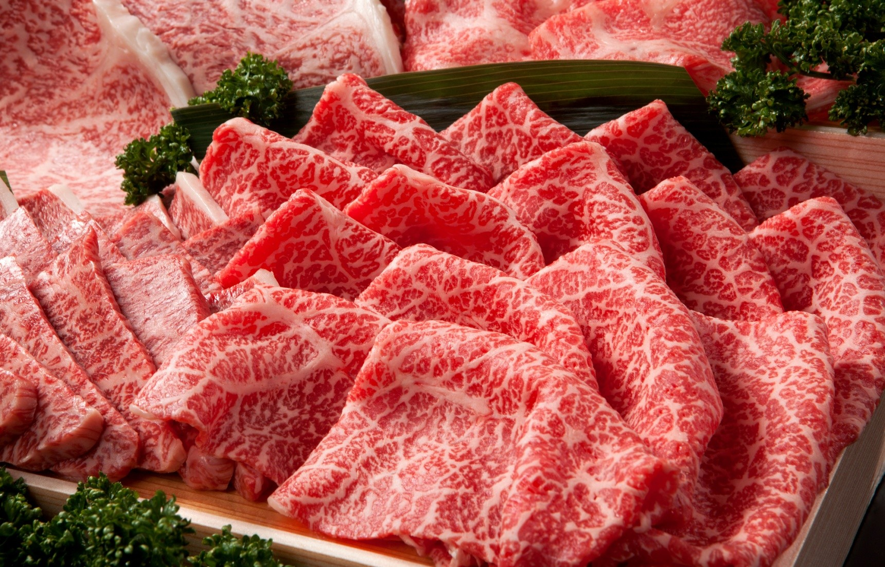
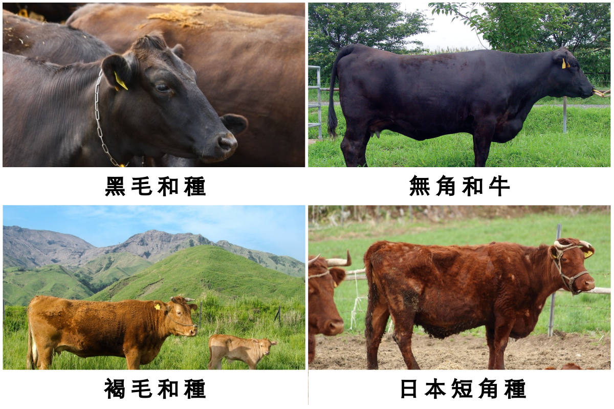
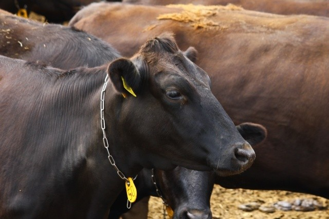
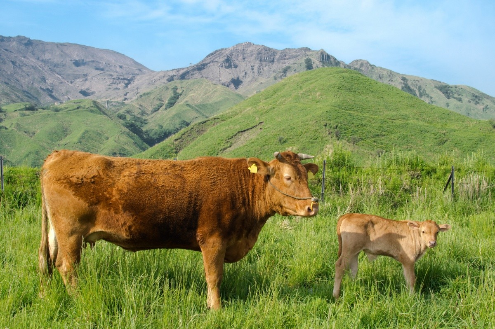

事實上，日本和牛只是統稱，日本各地進行商標登錄的和牛品牌已超過一百五十種。

說到日本和牛，除了肉質鮮甜柔軟，價格也相當高貴的印象以外，你對和牛的瞭解有多少呢？
本篇將告訴你究竟什麼是和牛，以及名聲享譽國際的日本三大和牛，
再嚴選日本各地的人氣和牛品牌和美味和牛料理店，讓你成為和牛達人！
一般人看到「和牛」會想到的就是「和」這個代表日本的字，因此也容易將和牛聯想為「日本產的牛」。
不過，其實和牛的定義更為嚴謹，專指「在日本被改良過後的牛種」。
目前被認定為「和牛」的日本牛品種一共有四個種類：
「黒毛和種（くろげわしゅ）」、「褐毛和種（あかげわしゅ）」、「無角和種（むかくわしゅ）」、以及「日本短角種（にほんたんかくしゅ）」。
 說到和牛，大多數人最有印象的想必就是「黑毛和牛」（Japanese Black）。

的確，目前在市面上所販售的和牛有九成以上都是黑毛和牛，
包括松阪牛、神戶牛、前澤牛、但馬牛、近江牛等廣為人知的日本和牛品牌代表，也全都是黑毛和牛。
黑毛和牛雖然被稱作「黑毛」，但其實毛色為黑中帶褐；全日本約有160萬頭，擁有良好的基因，其肌肉中平均分佈著脂肪，
即霜降部分，讓口感鮮甜、入口即化，且肉質水分少、具有彈力，
是日本最自豪的第一牛品種，也被做為牛肉美味程度的基準，盛名享譽國際。下面會介紹的日本三大和牛，也全都屬於黑毛和牛。
褐牛品種（Japanese Brown）
是在日本被飼育的和牛品種中頭數第二多的，

樣貌就如其名，褐色毛髮並且有角。口感雖稍稍不及黑毛和牛，但是性格溫馴容易飼養。
一般的褐牛肉質脂肪含量適中，其紅肉在重視健康的飲食者中相當具有人氣。